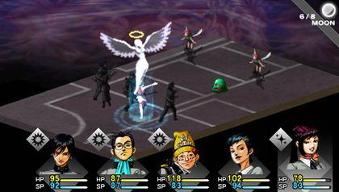
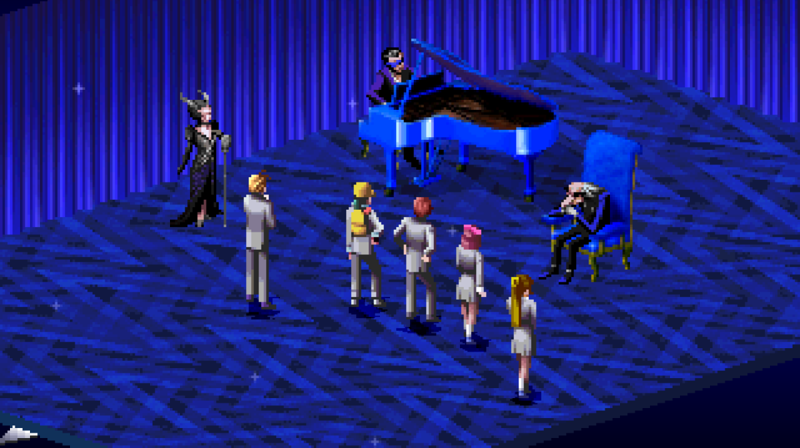

Megami Ibunroku Persona ou Revelations: Persona, é um RPG desenvolvido e publicado pela Atlus. É o primeiro jogo da série Persona, uma subsérie do Megami Tensei. Originalmente lançado para a Playstation em 1996 no Japão e na América do Norte o jogo teve uma versão para o Microsoft Windows em 1999.
A história centra-se num grupo de estudantes do ensino secundário que são confrontados com uma série de incidentes sobrenaturais. Depois de praticarem um ritual conhecido como "Persona", o grupo encontra um ser chamada Philemon, que representa o subconsciente da humanidade, que lhes dá a habilidade de invocar Personae, as materializações dos seus alter-egos. Com este poder, o grupo enfrenta várias forças que ameaçam o mundo.

O Persona 1 (Revelations: Persona) utiliza um sistema de combate por turnos clássico e baseado em grades (grid),Os combates ocorrem em um tabuleiro ou grade em que o posicionamento dos personagens e dos inimigos importa. Você deve observar o alcance das armas, ataques físicos e magias para conseguir atingir os alvos.
O primeiro jogo da franquia, lançado em 1996 como Megami Ibunroku Persona (ou Revelations: Persona no Ocidente), possui várias curiosidades marcantes:
• História reescrita várias vezes: A trama do jogo foi reescrita mais de 20 vezes durante o desenvolvimento, com forte inspiração nas obras de H.P. Lovecraft trazida pelo roteirista novato Tadashi Satomi.
• A localização ocidental bizarra: Na versão americana para o PlayStation original, a Atlus mudou nomes de personagens, características culturais e até a etnia do personagem Mark (Inaba), além de substituir a moeda do jogo (Ienes) por dólares e alterar o cenário para "Lunarvale".
• A rota perdida (Snow Queen Quest): A versão ocidental original removeu inteiramente a rota da Snow Queen Quest, deixando apenas a rota principal da SEBEC disponível no disco (embora os dados da outra rota tenham permanecido ocultos no CD).

• Mudança no Persona Máximo: Embora o protagonista use o Amon-Ra como Persona máximo no jogo, mídias e materiais posteriores da Atlus consideram Vishnu como o verdadeiro Persona máximo dele, por ser o membro mais forte do Arcana do Imperador e projetado por Kazuma Kaneko como o "Rei dos Personas".